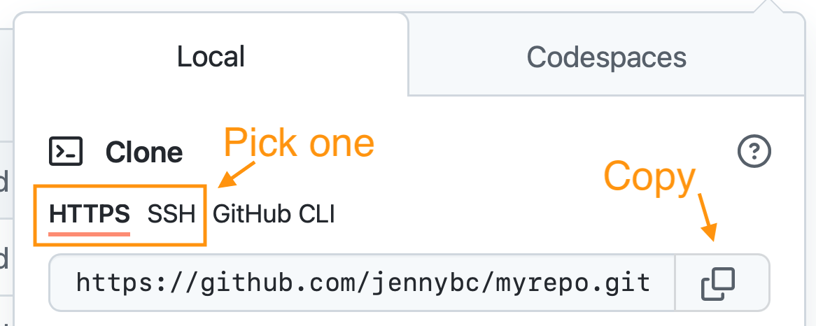
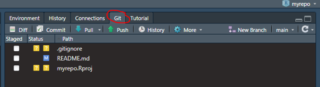
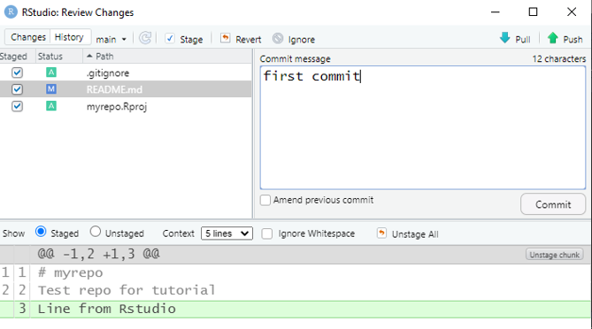
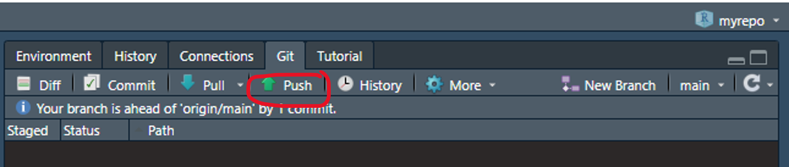
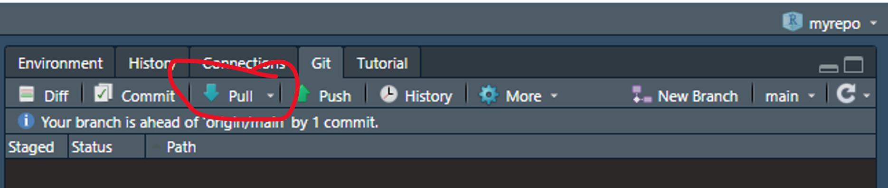

1 Installation and Setup
1.1 Installation
Install R and Rstudio (available from ECCC Software Centre)
- Software Centre can be very slow to install, you can install R and RStudio without administrator permissions from the internet as well https://posit.co/download/rstudio-desktop/
Install Git https://gitforwindows.org/ (does not require admin permissions)
- NOTE: When asked about “Adjusting your PATH environment”, make sure to select “Git from the command line and also from 3rd-party software”. Otherwise, accept the defaults.
Create a GitHub account https://github.com/
Install R packages: Open RStudio and run in the console:
install.packages("usethis")
1.2 Set username and email for git
usethis::use_git_config(user.name = "Jane Doe", user.email = "jane@example.org")user.nameis the name associated with your git commits so just make it informative for your collaborators (ie: actual name, github username)user.emailmust match your GitHub account email
1.3 Let git talk to GitHub
usethis::create_github_token()- Opens GitHub webpage: select “repo”, “user”, and “workflow” scopes
gitcreds::gitcreds_set()
1.4 Start a new project with GitHub
Step 1: Make a new repo on GitHub
Go to https://github.com and make sure you are logged in.
Near “Repositories”, click the big green “New” button.
- How to fill this in:
- Repository template: No template.
- Repository name: myrepo . Like a variable name, in code: descriptive but brief, no whitespace. Letters, digits, - , . , or _ are allowed.
- Description: any short description of the project
- Public.
- Initialize this repository with: Add a README file.
- Click the big green button that says “Create repository”.
- How to fill this in:
Step 2: Copy repo URL
Now click the big green button that says “<> Code”.
Copy a clone URL to your clipboard. Use the HTTPS URL.

Step 3: Clone into a new project in RStudio
- File > New Project > Version Control > Git. In the “repository URL” paste the URL of your new GitHub repository.
- Be intentional about where you create this Project. Don’t put it inside another git repository.
- I suggest you “Open in new session”.
- Click “Create Project” to create a new directory,
- This should download the README.md file that we created on GitHub in the previous step. Look in RStudio’s file browser pane for the README.md file.
- Behind the scenes, RStudio has done this for you:
git clone https://github.com/see24/myrepo.git
1.5 Work on a project
- Edit the README.md file, e.g., by adding the line “This is a line from RStudio”.
- Save the file locally
- On the Git pane click commit

- In the pop-up review the changes at the bottom
- Check the “Staged” box and type a commit message and click “Commit”

1.5.1 Sync changes to GitHub: Push
- Click “Push” in the Rstudio Git pane
- Look at the repo on GitHub so see the new line is there

1.5.2 Sync local copy from GitHub: Pull
- In the GitHub repo main page
- In the upper right corner of the Readme, click on the pencil
- Add a line eg : “Line added from GitHub.”
- Click “Commit changes.”
- In RStudio click Pull on the Git pane
- You should see the new line in the Readme

1.6 Add an existing project to GitHub
- Create a new repo and Rstudio project in the same way as above
- Simply copy all files into the newly created folder on your local computer
- Stage and commit all files that you want to store on GitHub
- Nothing sensitive ie passwords, keys etc (you can have a private repo if you are not ready to share code with the world)
- Probably not large datasets
- Use . gitignore to avoid git tracking things (more on this later)
This is the simplest way to do it but there are more advanced, more traditional git ways to do it: https://happygitwithr.com/existing-github-last.html
1.7 Issues with installation
If RStudio is not finding a git installation: + Restart RStudio and try again + If still not working, run this in the windows command line: git --exec-path + Copy the path, then in RStudio click Tools > Global Options > Git/SVN and set the Git executable by clicking browse, pasting the path in the address bar and selecting the git.exe file. + Restart RStudio again
See https://happygitwithr.com/rstudio-see-git.html for more instructions on troubleshooting
1.8 Git terminology summary 1
- Repository (repo): Folder that contains a hidden .git file that tracks changes made to files in that folder. The folder can “live” on your local computer or a server like GitHub’s. On GitHub the repository is also the web page where all the files are stored among other things
- Push: Copy changes from your local version of the repo to the GitHub version
- Pull: Copy changes from the GitHub version of the repo to your local version
- Clone: make a copy of a git repository. By default in R studio this is connected to the GitHub version (called the remote or origin)
- Commit: A marker that is kept in the git history and helps to incrementally track changes. Made useful by descriptive commit messages